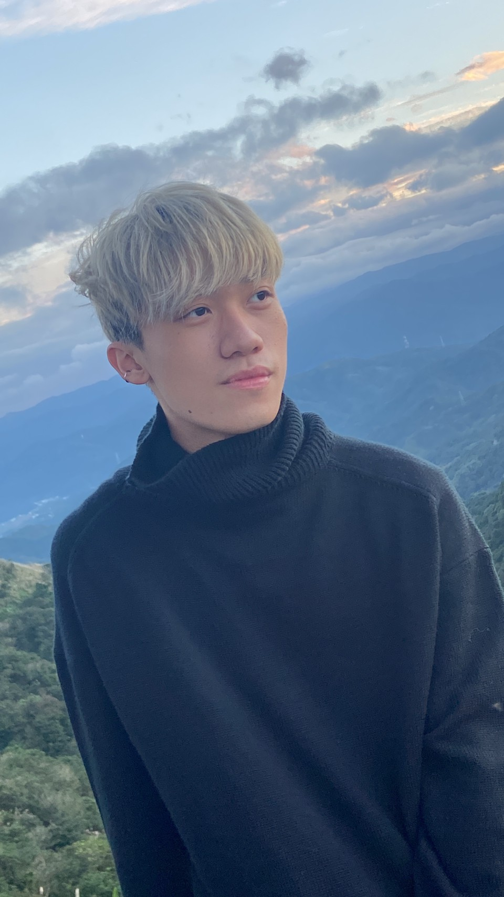

Vic Wu
Software Engineer
ABOUT ME
我的名字叫吳聲佑，目前就讀淡江大學資工系一年級，最擅長的技術是C++。
不論是在學習上或是課外活動，對於有熱忱的事物總能投入高度專注去學習，並且不遺餘力的自學去精進自己，使得我在學習、運動等各方面都有不錯的表現。
對我而言，人生沒有奇蹟，唯有持續不斷的學習，才能讓自己不害怕困難與挑戰，不停追求更好的自己是我永不放棄的目標。
「說到做到」是我的堅持原則，設下對自己的目標後，不管是面對什麼難題我都會勇於克服，即使要比別人多花一點時間與努力才能成功，我相信透過對自己的要求，我可以持續堅持向目標邁進，不僅能不斷超越自己，亦能達到妥善運用時間，自我實踐。